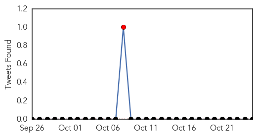
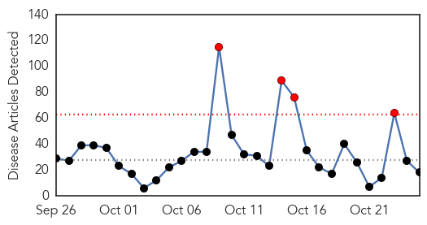
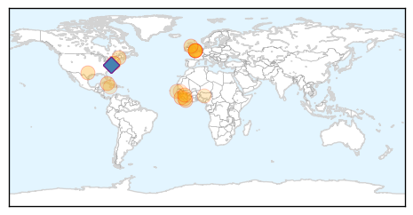

Pertussis
30-Day Web Trend
0 alerts, 0 warnings
30-Day Twitter Trend
1 alerts, 0 warnings

Article Locations

Article Confidences

Top Articles:
-
No articles found for Oct 25, 2015
Top Tweets:
-
No tweets found for Oct 25, 2015
Ebola
30-Day Web Trend
4 alerts, 0 warnings

30-Day Twitter Trend
9 alerts, 1 warnings

Article Locations
Article Confidences

Top Articles:
- 1.000
- Mystery deaths in Sierra Leone spread fear of Ebola relapses
- 0.994
- Nurse files lawsuit over ebola quarantine
- 0.992
- Salone on the right track of recovery — Sierra Leone News
- 0.991
- 'Significant improvement' by Ebola nurse Pauline Cafferkey
- 0.988
- Suspected Ebola Relapse Could Be The First
- 0.979
- ASLM hosts Global Health Security Agenda for 2015
- 0.970
- Sick British Ebola nurse ‘much better’
- 0.960
- Staying safe in Liberia with water and soap
- 0.959
- An Ebola ill Scottish nurse again hospitalized
- 0.937
- Southern Europe is a new disease ‘hot zone’
- 0.899
- Ebola Claims 3 Health Workers In Bomi County, Western Liberia
- 0.830
- Gov. Christie Sued By Nurse Who Was Quarantined Over Ebola Fears
- 0.786
- Nigeria: W/Africa disease control centre in the offing
- 0.668
- FG Reiterates Commitment To Establish ECOWAS Centre For Disease Control In Nigeria
- 0.586
- If you see a donkey atop a light post, chances are it did not get there by itself
- 0.561
- Nurse Quarantined During Ebola Panic Sues Chris Christie
- 0.558
- Nigeria to open ECOWAS regional centre for disease control « Nigerian Pilot Newspaper
- 0.527
- Cuba’s corrupt Castro regime pocketed WHO Ebola money meant for doctors
Top Tweets:
- 0.998
- Ebola: United Kingdom nurse has meningitis caused by persisting disease -doctors - Huewire News https://t.co/6KaiEDMNbE ebola EVD
- 0.995
- Ebola virus lives in bodily fluids - https://t.co/6GRxJa3TCj ebola
- 0.995
- Ebola Infographic mockup - https://t.co/Bb6qWwedD7 ebola
- 0.995
- Ebola Infographic - https://t.co/S77Sqzu8sQ ebola
- 0.995
- EBOLA - https://t.co/duawn4Rh5j ebola
- 0.994
- British nurse who had Ebola has meningitis - https://t.co/6tT71jRM9n ebola
- 0.993
- United States nurse quarantined over ebola fears sues - https://t.co/6USXhq1QEi ebola
- 0.990
- Ebola Virus: Structure and Function - https://t.co/v8yKPFRm5p ebola
- 0.987
- Ebola Quarantine Lawsuit - https://t.co/CR81jeC9oM ebola
- 0.982
- Nurse's Ebola-Quarantine Suit Raises Novel Issues - ValueWalk https://t.co/JYAJnwYkZK ebola EVD
- 0.981
- Nurse's Ebola-Quarantine Suit Raises Novel Issues - https://t.co/cAjC8y1BJy ebola
- 0.981
- Ebola Attack Team - https://t.co/mTMcS7mQxs ebola
- 0.973
- Nurse files lawsuit over ebola quarantine - https://t.co/HvnizSDPWq ebola
- 0.967
- EBOLA (SUPER FAST) - https://t.co/oZqR2djfka ebola
- 0.966
- Nurse Pauline Cafferkey suffering from meningitis caused by Ebola - https://t.co/LN7BBzGhpW ebola
- 0.962
- United Kingdom doctors say nurse suffering Ebola relapse has improved - https://t.co/YkbLfa3QhY ebola
- 0.961
- [H] Keys [W] Most BS Ebola and Cancer Karambit case hardened - https://t.co/WCLQ6KE55K ebola
- 0.960
- Nurse Files Lawsuit Over 'Forced' Ebola Quarantine - https://t.co/ovSGS2SJJE ebola
- 0.959
- Nurse Quarantined During Ebola Panic Sues Chris Christie - https://t.co/iSXx8gUkXf ebola
- 0.953
- AfDB approves a $33.3 million Ebola recovery fund - https://t.co/7g0jHjZdyf ebola
- 0.948
- Ebola daughter update and advice. - https://t.co/nJV7ltQIpr ebola
- 0.944
- Long recovery ahead for ebola nurse - https://t.co/QZTj5Biwhy ebola
- 0.939
- AU calls for comprehensive approach to addressing consequences of Ebola outbreak - Naija247news https://t.co/1afPAut2H6 ebola EVD
- 0.935
- Marauding Microbes: Health Scares Throughout History - https://t.co/WLRXfe5pQT ebola
- 0.932
- Gov. Christie Sued By Nurse Who Was Quarantined Over Ebola Fears - https://t.co/WYIChLktrK ebola
- 0.926
- AU calls for comprehensive approach to addressing consequences of Ebola outbreak - https://t.co/65UNm83XpZ ebola
- 0.915
- Ebola Nurse Sues Chris Christie for Being Mean - https://t.co/dTLNbrBlnM ebola
- 0.909
- Chris Christie Was Right To Quarantine Ebola Nurse - https://t.co/gxNqUPOWqG ebola
- 0.901
- Nurse sues New Jersey Governor as she was quarantined over Ebola fears - https://t.co/sv9WSEyVO5 ebola
- 0.895
- Lack of training delays Cuban doctors from joining Ebola fight | CTV News - https://t.co/guwxuUeu8I ebola
- 0.890
- Ebola Survivors To Undergo 3 Specialized Tests - https://t.co/gKuZ9RlWkX ebola
- 0.886
- Suspected Ebola Relapse Could Be The First - https://t.co/jWr4bFdoCt ebola
- 0.876
- Ophthalmologists warned of Ebola in eyes of survivors - https://t.co/1P9fBtAoEU ebola
- 0.861
- Nurse quarantined in NJ for Ebola is back to sue Gov. Chris Christie - Raw Story https://t.co/HXLhNMp1V3 ebola EVD
- 0.859
- British athletes run in Sierra Leone marathon to raise cash for Ebola orphans - https://t.co/L4gbwrglxU https://t.co/b5UL0Eez44 ebola EVD
- 0.857
- FDA scientist talks "new normal" of Ebola, TEDxUSU excites - The Herald Journal https://t.co/PAjHf9y3nm ebola EVD
- 0.848
- 'Ebola Nurse' Files Lawsuit Against Governor for False Imprisonment - https://t.co/F8wm67uKWg ebola
- 0.822
- 'Significant improvement' by Ebola nurse Pauline Cafferkey - https://t.co/wToSL3XsRL ebola
- 0.808
- Bipartisan solutions are needed in the effective management of Ebola - https://t.co/GXpW8Nrzfk ebola
- 0.765
- 'Ebola Nurse' Files Lawsuit Against Governor for False Imprisonment [Video] - https://t.co/QxhUt2mqyT ebola
- 0.759
- Ophthalmologists warned of Ebola in eyes of survivors - https://t.co/NXdg7rTQZC https://t.co/A5MQGmhsnS ebola EVD
- 0.744
- AU calls for comprehensive approach to post-Ebola recovery - https://t.co/SA8VrLDpkq ebola
- 0.726
- Nurse Kaci Hikcox Sues New Jersey Governor Chris Christie Over 'Unconstitutional' Ebola ... - https://t.co/C3K8TSd1St ebola
- 0.718
- Ebola: Up to 100 in Texas at Risk of Exposure - https://t.co/IXRcHuoG1d ebola
- 0.583
- AU calls for comprehensive approach to addressing consequences of Ebola outbreak - Naija247news https://t.co/DAmoQPEOPm
- 0.534
- RT: @rajshah: We will never again see a large scale Ebola epidemic...our world is woefully unprepared to deal w maj. pandemic threat…